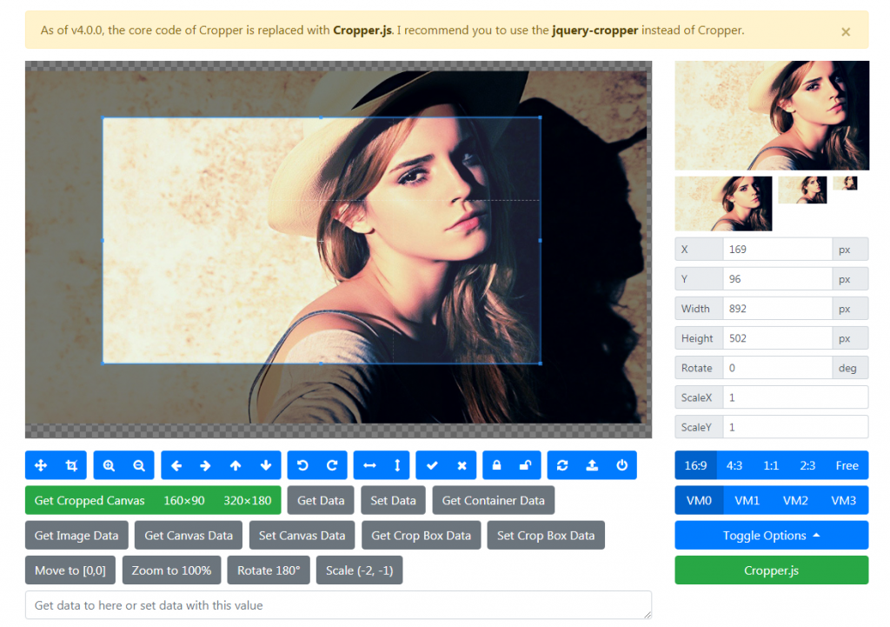
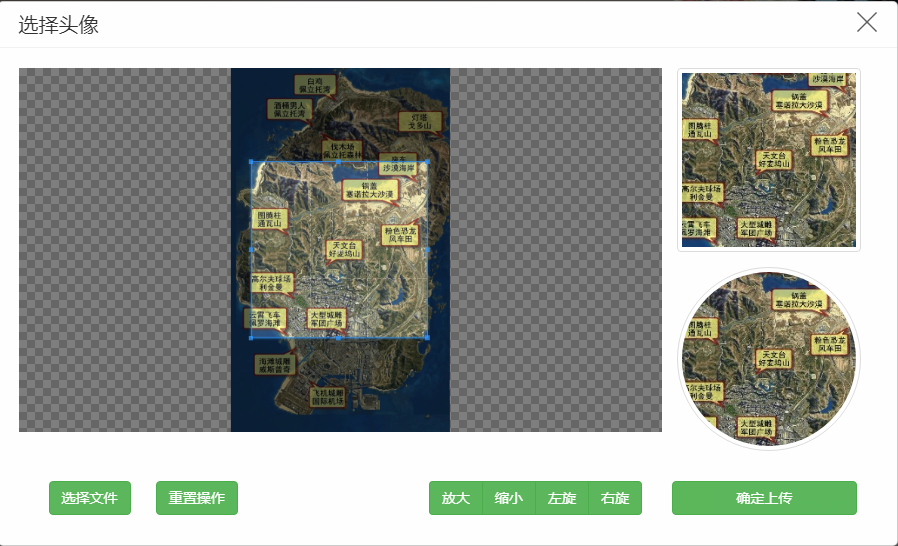

<!DOCTYPE html>


<html lang="zh-CN">


<head>
  <meta charset="utf-8" />
   
  <meta name="keywords" content="翟天野 天野 翟天野博客 tianye zhaitianye" />
   
  <meta name="description" content="The seeker of the world" />
  
  <meta name="viewport" content="width=device-width, initial-scale=1, maximum-scale=1" />
  <title>
    Cropper-裁剪上传头像 |  Tianye Blog
  </title>
  <meta name="generator" content="hexo-theme-ayer">
  
  <link rel="shortcut icon" href="/favicon.ico" />
  
  
<link rel="stylesheet" href="/dist/main.css">

  
<link rel="stylesheet" href="/comm/remixicon.min.css">

  
<link rel="stylesheet" href="/css/custom.css">

  
  
<script src="/comm/pace.min.js"></script>

  
  

  
<script>
var _hmt = _hmt || [];
(function() {
	var hm = document.createElement("script");
	hm.src = "https://hm.baidu.com/hm.js?a65f4359920e6c4b5b2b6d0519751045";
	var s = document.getElementsByTagName("script")[0]; 
	s.parentNode.insertBefore(hm, s);
})();
</script>


</head>

</html>

<body>
  <div id="app">
    
      
      <canvas width="1777" height="841"
        style="position: fixed; left: 0px; top: 0px; z-index: 99999; pointer-events: none;"></canvas>
      
    <main class="content on">
      <section class="outer">
  <article
  id="post-Cropper-裁剪上传头像"
  class="article article-type-post"
  itemscope
  itemprop="blogPost"
  data-scroll-reveal
>
  <div class="article-inner">
    
    <header class="article-header">
       
<h1 class="article-title sea-center" style="border-left:0" itemprop="name">
  Cropper-裁剪上传头像
</h1>
 

    </header>
     
    <div class="article-meta">
      <a href="/2017/09/Cropper-%E8%A3%81%E5%89%AA%E4%B8%8A%E4%BC%A0%E5%A4%B4%E5%83%8F/" class="article-date">
  <time datetime="2017-09-15T09:30:00.000Z" itemprop="datePublished">2017-09-15</time>
</a> 
  <div class="article-category">
    <a class="article-category-link" href="/categories/JS%E5%B7%A5%E5%85%B7/">JS工具</a>
  </div>
  
<div class="word_count">
    <span class="post-time">
        <span class="post-meta-item-icon">
            <i class="ri-quill-pen-line"></i>
            <span class="post-meta-item-text"> 字数统计:</span>
            <span class="post-count">2.1k</span>
        </span>
    </span>

    <span class="post-time">
        &nbsp; | &nbsp;
        <span class="post-meta-item-icon">
            <i class="ri-book-open-line"></i>
            <span class="post-meta-item-text"> 阅读时长≈</span>
            <span class="post-count">10 分钟</span>
        </span>
    </span>
</div>
 
    </div>
      
    <div class="tocbot"></div>


  
    <div class="article-entry" itemprop="articleBody">
       
  <h3 id="移步官网（http-fengyuanchen-github-io-cropper-）"><a href="#移步官网（http-fengyuanchen-github-io-cropper-）" class="headerlink" title="移步官网（http://fengyuanchen.github.io/cropper/）"></a>移步官网（<a href="http://fengyuanchen.github.io/cropper/" target="_blank" rel="noopener">http://fengyuanchen.github.io/cropper/</a>）</h3><h4 id="cropper-js-通过canvas实现图片裁剪，最后在通过canvas获取裁剪区域的图片base64串。"><a href="#cropper-js-通过canvas实现图片裁剪，最后在通过canvas获取裁剪区域的图片base64串。" class="headerlink" title="cropper.js  通过canvas实现图片裁剪，最后在通过canvas获取裁剪区域的图片base64串。"></a>cropper.js  通过canvas实现图片裁剪，最后在通过canvas获取裁剪区域的图片base64串。</h4><p> 1.container 容器   2.canvas 图片   3.crop  裁剪框 option相关参数说明：</p>
<h3 id="viewMode-显示模式"><a href="#viewMode-显示模式" class="headerlink" title="viewMode 显示模式"></a>viewMode 显示模式</h3><ul>
<li>Type: <code>Number</code></li>
<li>Default: <code>0</code></li>
<li>Options:<ul>
<li><code>0</code>: the crop box is just within the container    裁剪框只能在 1内移动</li>
<li><code>1</code>: the crop box should be within the canvas   裁剪框 只能在  2图片内移动</li>
<li><code>2</code>: the canvas should not be within the container  2图片 不全部铺满1 （即缩小时可以有一边出现空隙）</li>
<li><code>3</code>: the container should be within the canvas  2图片 全部铺满1 （即 再怎么缩小也不会出现空隙）</li>
</ul>
</li>
</ul>
<h3 id="dragMode-拖动模式"><a href="#dragMode-拖动模式" class="headerlink" title="dragMode  拖动模式"></a>dragMode  拖动模式</h3><ul>
<li>Default: <code>&#39;crop&#39;</code></li>
<li>Options:<ul>
<li><code>&#39;crop&#39;</code>: create a new crop box  当鼠标 点击一处时根据这个点重新生成一个 裁剪框</li>
<li><code>&#39;move&#39;</code>: move the canvas    可以拖动图片</li>
<li><code>&#39;none&#39;</code>: do nothing  图片就不能拖动了</li>
</ul>
</li>
</ul>
<p>Define the dragging mode of the cropper. *<em>toggleDragModeOnDblclick   *</em>默认true .是否允许 拖动模式 “crop” 跟“move” 的切换状态。。即当点下为crop 模式，如果未松开拖动这时就是“move”模式。放开后又为“crop”模式</p>
<p>*<em>preview  *</em>截图的显示位置   型：<code>String</code>(jQuery选择器)，默认值<code>&#39;&#39;</code> *<em>responsive *</em>：类型：<code>Boolean</code>，默认值<code>true</code>。是否在窗口尺寸改变的时候重置cropper。</p>
<p><strong>checkImageOrigin</strong>：类型：<code>Boolean</code>，默认值<code>true</code>。默认情况下，插件会检测图片的源，如果是跨域图片，图片元素会被添加<code>crossOrigin</code> class，并会为图片的url添加一个时间戳来使<code>getCroppedCanvas</code>变为可用。添加时间戳会使图片重新加载，以使跨域图片能够使用<code>getCroppedCanvas</code>。在图片上添加<code>crossOrigin</code> class会阻止在图片url上添加时间戳，及图片的重新加载。</p>
<p>background：类型：<code>Boolean</code>，默认值<code>true</code>。是否在容器上显示网格背景。 要想改背景，我是直接改，cropper.css样式中的 cropper-bg</p>
<p>canvas（图片）相关</p>
<p><strong>movable</strong>：类型：<code>Boolean</code>，默认值<code>true</code>。是否允许移动图片</p>
<p><strong>rotatable</strong>：类型：<code>Boolean</code>，默认值<code>true</code>。是否允许旋转图片。</p>
<p>*<em>scalable  *</em>默认 true 。 是否允许扩展图片。（暂时不知道干嘛用）</p>
<p><strong>zoomable</strong> 默认true, 石头允许缩放图片。</p>
<p>*<em>zoomOnWheel *</em>默认 true 是否允许鼠标滚轴 缩放图片</p>
<p>*<em>zoomOnTouch *</em>默认true 是否允许触摸缩放图片（触摸屏上两手指操作。）</p>
<p>*<em>wheelZoomRatio *</em>默认0.1 师表滚轴缩放图片比例。即滚一下。图片缩放多少。如 0.1 就是图片的10%</p>
<p>crop(裁剪框)相关</p>
<p>*<em>aspectRatio *</em>裁剪框比例  默认<code>NaN</code>   例如：: 1 / 1,//裁剪框比例 1：1</p>
<p><strong>modal</strong>：类型：Boolean，默认值true。是否在剪裁框上显示黑色的模态窗口。</p>
<p><strong>cropBoxMovable **:默认true ,是否允许拖动裁剪框</strong>cropBoxResizable <strong>:默认 true,//是否允许拖动 改变裁剪框大小 **autoCrop</strong>：类型：<code>Boolean</code>，默认值<code>true</code>。是否允许在初始化时自动出现裁剪框。<strong>autoCropArea</strong>：类型：<code>Number</code>，默认值<code>0.8</code>（图片的80%）。0-1之间的数值，定义自动剪裁框的大小。<strong>highlight</strong>：类型：<code>Boolean</code>，默认值<code>true</code>。是否在剪裁框上显示白色的模态窗口。</p>
<p><strong>guides</strong>：类型：<code>Boolean</code>，默认值<code>true</code>。是否在剪裁框上显示虚线。</p>
<p><strong>center</strong>:  默认true  是否显示裁剪框 中间的+</p>
<p><strong>restore</strong> :  类型：<code>Boolean</code>，默认值<code>true  是否</code>调整窗口大小后恢复裁剪区域。</p>
<p>大小相关</p>
<p><strong>minContainerWidth</strong>：类型：<code>Number</code>，默认值<code>200</code>。容器的最小宽度。</p>
<p><strong>minContainerHeight</strong>：类型：<code>Number</code>，默认值<code>100</code>。容器的最小高度。</p>
<p><strong>minCanvasWidth</strong>：类型：<code>Number</code>，默认值<code>0</code>。canvas 的最小宽度（image wrapper）。<strong>minCanvasHeight</strong>：类型：<code>Number</code>，默认值<code>0</code>。canvas 的最小高度（image wrapper）。监听触发的方法</p>
<p><strong>build</strong>：类型：<code>Function</code>，默认值<code>null</code>。<code>build.cropper</code>事件的简写方式。 ====== 。控件初始化前执行<strong>built</strong>：类型：<code>Function</code>，默认值<code>null</code>。<code>built.cropper</code>事件的简写方式。  ====== 空间初始化完成后执行<strong>dragstart</strong>：类型：<code>Function</code>，默认值<code>null</code>。<code>dragstart.cropper</code>事件的简写方式。 ======  拖动开始执行<strong>dragmove</strong>：类型：<code>Function</code>，默认值<code>null</code>。<code>dragmove.cropper</code>事件的简写方式。======  拖动移动中执行<strong>dragend</strong>：类型：<code>Function</code>，默认值<code>null</code>。<code>dragend.cropper</code>事件的简写方式。======  拖动结束执行<strong>zoomin</strong>：类型：<code>Function</code>，默认值<code>null</code>。<code>zoomin.cropper</code>事件的简写方式。 ======  缩小执行<strong>zoomout</strong>：类型：<code>Function</code>，默认值<code>null</code>。<code>zoomout.cropper</code>事件的简写方式。 ======  放大执行</p>
<p>示例代码：</p>
<h4 id="html"><a href="#html" class="headerlink" title="html"></a>html</h4><figure class="highlight plain"><table><tr><td class="gutter"><pre><span class="line">1</span><br><span class="line">2</span><br><span class="line">3</span><br><span class="line">4</span><br><span class="line">5</span><br><span class="line">6</span><br><span class="line">7</span><br><span class="line">8</span><br><span class="line">9</span><br><span class="line">10</span><br><span class="line">11</span><br><span class="line">12</span><br><span class="line">13</span><br><span class="line">14</span><br><span class="line">15</span><br><span class="line">16</span><br><span class="line">17</span><br><span class="line">18</span><br><span class="line">19</span><br><span class="line">20</span><br><span class="line">21</span><br><span class="line">22</span><br><span class="line">23</span><br><span class="line">24</span><br><span class="line">25</span><br><span class="line">26</span><br><span class="line">27</span><br><span class="line">28</span><br><span class="line">29</span><br><span class="line">30</span><br><span class="line">31</span><br><span class="line">32</span><br><span class="line">33</span><br><span class="line">34</span><br><span class="line">35</span><br><span class="line">36</span><br><span class="line">37</span><br><span class="line">38</span><br><span class="line">39</span><br><span class="line">40</span><br><span class="line">41</span><br><span class="line">42</span><br><span class="line">43</span><br><span class="line">44</span><br><span class="line">45</span><br><span class="line">46</span><br><span class="line">47</span><br></pre></td><td class="code"><pre><span class="line">&lt;!\-\- 选择头像弹出层 --&gt;</span><br><span class="line"> &lt;div class&#x3D;&quot;clear show-selhead affix t-0 l-0 z-999 full-wh rgba-60 dis-n&quot;&gt;</span><br><span class="line"> &lt;div class&#x3D;&quot;pos-a t-150 l-0 full-w&quot;&gt;</span><br><span class="line"> &lt;div class&#x3D;&quot;w-900 mg-0-auto clear pos-r bg-white selhead-content radius-5 t--300 modal-content&quot;&gt;</span><br><span class="line"> &lt;div class&#x3D;&quot;pt-10 pb-10 line-h-25 pos-r f-20 pl-20 pr-20 col-333 full-w radius-5 cur-d&quot;&gt;</span><br><span class="line"> 选择头像</span><br><span class="line"> &lt;img class&#x3D;&quot;pos-a t-10 r-20 img-20 close-mod cur-p&quot; src&#x3D;&quot;..&#x2F;..&#x2F;img&#x2F;user&#x2F;user&#x2F;close.png&quot; alt&#x3D;&quot;&quot;&gt;</span><br><span class="line"> &lt;&#x2F;div&gt;</span><br><span class="line"> &lt;div class&#x3D;&quot;clear bor bor-t bor-col-f2 pd-20&quot;&gt;</span><br><span class="line"> &lt;div class&#x3D;&quot;clear col-sm-9 h-364 bg-fcfcfc box-sha-inset-big pos-r pl-0 pr-0 overflow-h&quot;&gt;</span><br><span class="line"> &lt;div class&#x3D;&quot;clear &quot; style&#x3D;&quot;width: 643px;height: 364px;&quot;&gt;</span><br><span class="line"> &lt;img id&#x3D;&quot;show-main-img&quot; class&#x3D;&quot;max-w-100p&quot; src&#x3D;&quot;&quot;&gt;</span><br><span class="line"> &lt;&#x2F;div&gt;</span><br><span class="line"> &lt;&#x2F;div&gt;</span><br><span class="line"> &lt;div class&#x3D;&quot;clear col-sm-3&quot;&gt;</span><br><span class="line"> &lt;div class&#x3D;&quot;clear&quot;&gt;</span><br><span class="line"> &lt;img id&#x3D;&quot;show-little-imgv1&quot; class&#x3D;&quot;img-184 img-thumbnail&quot; src&#x3D;&quot;&quot; alt&#x3D;&quot;&quot;&gt;</span><br><span class="line"> &lt;&#x2F;div&gt;</span><br><span class="line"> &lt;div class&#x3D;&quot;clear mt-15&quot;&gt;</span><br><span class="line"> &lt;img id&#x3D;&quot;show-little-imgv2&quot; class&#x3D;&quot;img-184 img-thumbnail full-radius&quot; src&#x3D;&quot;&quot; alt&#x3D;&quot;&quot;&gt;</span><br><span class="line"> &lt;&#x2F;div&gt;</span><br><span class="line"> &lt;&#x2F;div&gt;</span><br><span class="line"> &lt;div class&#x3D;&quot;clear col-sm-12 pl-0 pr-0 mt-30 mb-10&quot;&gt;</span><br><span class="line"> &lt;div class&#x3D;&quot;clear col-sm-9 btn-toolbar&quot; role&#x3D;&quot;toolbar&quot;&gt;</span><br><span class="line"> &lt;div class&#x3D;&quot;btn-group pull-left col-sm-2&quot; role&#x3D;&quot;group&quot;&gt;</span><br><span class="line"> &lt;span class&#x3D;&quot;btn btn-success pos-r cur-p&quot;&gt;</span><br><span class="line"> &lt;input type&#x3D;&quot;file&quot; id&#x3D;&quot;sel-file&quot; class&#x3D;&quot;opacity-0 pos-a t-0 l-0 full-wh cur-p&quot;&gt;选择文件</span><br><span class="line"> &lt;&#x2F;span&gt;</span><br><span class="line"> &lt;&#x2F;div&gt;</span><br><span class="line"> &lt;div class&#x3D;&quot;btn-group pull-left col-sm-3&quot; role&#x3D;&quot;group&quot;&gt;</span><br><span class="line"> &lt;button type&#x3D;&quot;button&quot; class&#x3D;&quot;btn btn-success cro-btn-reset&quot;&gt;重置操作&lt;&#x2F;button&gt;</span><br><span class="line"> &lt;&#x2F;div&gt;</span><br><span class="line"> &lt;div class&#x3D;&quot;btn-group pull-left pull-right&quot; role&#x3D;&quot;group&quot;&gt;</span><br><span class="line"> &lt;button type&#x3D;&quot;button&quot; class&#x3D;&quot;btn btn-success cro-btn-big&quot;&gt;放大&lt;&#x2F;button&gt;</span><br><span class="line"> &lt;button type&#x3D;&quot;button&quot; class&#x3D;&quot;btn btn-success cro-btn-small&quot;&gt;缩小&lt;&#x2F;button&gt;</span><br><span class="line"> &lt;button type&#x3D;&quot;button&quot; class&#x3D;&quot;btn btn-success cro-btn-left&quot;&gt;左旋&lt;&#x2F;button&gt;</span><br><span class="line"> &lt;button type&#x3D;&quot;button&quot; class&#x3D;&quot;btn btn-success cro-btn-right&quot;&gt;右旋&lt;&#x2F;button&gt;</span><br><span class="line"> &lt;&#x2F;div&gt;</span><br><span class="line"> &lt;&#x2F;div&gt;</span><br><span class="line"> &lt;div class&#x3D;&quot;clear col-sm-3&quot;&gt;</span><br><span class="line"> &lt;button class&#x3D;&quot;btn full-w btn-success cro-btn-submit&quot;&gt;确定上传&lt;&#x2F;button&gt;</span><br><span class="line"> &lt;&#x2F;div&gt;</span><br><span class="line"> &lt;&#x2F;div&gt;</span><br><span class="line"> &lt;&#x2F;div&gt;</span><br><span class="line"> &lt;&#x2F;div&gt;</span><br><span class="line"> &lt;&#x2F;div&gt;</span><br><span class="line"> &lt;&#x2F;div&gt;</span><br></pre></td></tr></table></figure>
<h4 id="js"><a href="#js" class="headerlink" title="js"></a>js</h4><figure class="highlight plain"><table><tr><td class="gutter"><pre><span class="line">1</span><br><span class="line">2</span><br><span class="line">3</span><br><span class="line">4</span><br><span class="line">5</span><br><span class="line">6</span><br><span class="line">7</span><br><span class="line">8</span><br><span class="line">9</span><br><span class="line">10</span><br><span class="line">11</span><br><span class="line">12</span><br><span class="line">13</span><br><span class="line">14</span><br><span class="line">15</span><br><span class="line">16</span><br><span class="line">17</span><br><span class="line">18</span><br><span class="line">19</span><br><span class="line">20</span><br><span class="line">21</span><br><span class="line">22</span><br><span class="line">23</span><br><span class="line">24</span><br><span class="line">25</span><br><span class="line">26</span><br><span class="line">27</span><br><span class="line">28</span><br><span class="line">29</span><br><span class="line">30</span><br><span class="line">31</span><br><span class="line">32</span><br><span class="line">33</span><br><span class="line">34</span><br><span class="line">35</span><br><span class="line">36</span><br><span class="line">37</span><br><span class="line">38</span><br><span class="line">39</span><br><span class="line">40</span><br><span class="line">41</span><br><span class="line">42</span><br><span class="line">43</span><br><span class="line">44</span><br><span class="line">45</span><br><span class="line">46</span><br><span class="line">47</span><br><span class="line">48</span><br><span class="line">49</span><br></pre></td><td class="code"><pre><span class="line">&#x2F;*选择头像部分图像操作部分js*&#x2F;</span><br><span class="line"> cutimg();</span><br><span class="line"></span><br><span class="line">function cutimg() &#123;</span><br><span class="line"> $(&#39;#show-main-img&#39;).cropper(&#123;</span><br><span class="line"> aspectRatio: 1 &#x2F; 1,</span><br><span class="line"> crop: function(e) &#123;</span><br><span class="line"> var nowspace &#x3D; $(&#39;#show-main-img&#39;).cropper(&quot;getCroppedCanvas&quot;, &#123; width: 200, height: 200 &#125;);</span><br><span class="line"> var dataurl &#x3D; nowspace.toDataURL(&#39;image&#x2F;jpeg&#39;);</span><br><span class="line"> $(&quot;#show-little-imgv1&quot;).attr(&quot;src&quot;, dataurl);</span><br><span class="line"> $(&quot;#show-little-imgv2&quot;).attr(&quot;src&quot;, dataurl);</span><br><span class="line"> &#125;</span><br><span class="line"> &#125;);</span><br><span class="line"> &#125;;</span><br><span class="line"> $(&#39;#sel-file&#39;).change(function(e) &#123;</span><br><span class="line"> var file &#x3D; e.target.files\[0\];</span><br><span class="line"> var bloburl &#x3D; URL.createObjectURL(file);</span><br><span class="line"> $(&#39;#show-main-img&#39;).attr(&quot;src&quot;, bloburl);</span><br><span class="line"> $(&#39;#show-main-img&#39;).cropper(&quot;destroy&quot;);</span><br><span class="line"> cutimg();</span><br><span class="line"> &#125;);</span><br><span class="line"> $(&quot;.cro-btn-big&quot;).click(function() &#123;</span><br><span class="line"> $(&#39;#show-main-img&#39;).cropper(&quot;zoom&quot;, 0.1);</span><br><span class="line"> &#125;)</span><br><span class="line"> $(&quot;.cro-btn-small&quot;).click(function() &#123;</span><br><span class="line"> $(&#39;#show-main-img&#39;).cropper(&quot;zoom&quot;, -0.1);</span><br><span class="line"> &#125;)</span><br><span class="line"> $(&quot;.cro-btn-left&quot;).click(function() &#123;</span><br><span class="line"> $(&#39;#show-main-img&#39;).cropper(&quot;rotate&quot;, -90);</span><br><span class="line"> &#125;)</span><br><span class="line"> $(&quot;.cro-btn-right&quot;).click(function() &#123;</span><br><span class="line"> $(&#39;#show-main-img&#39;).cropper(&quot;rotate&quot;, 90);</span><br><span class="line"> &#125;)</span><br><span class="line"> $(&quot;.cro-btn-reset&quot;).click(function() &#123;</span><br><span class="line"> $(&#39;#show-main-img&#39;).cropper(&quot;reset&quot;);</span><br><span class="line"> &#125;)</span><br><span class="line"> $(&quot;.cro-btn-submit&quot;).click(function() &#123;</span><br><span class="line"> var submitspace &#x3D; $(&#39;#show-main-img&#39;).cropper(&quot;getCroppedCanvas&quot;, &#123; width: 200, height: 200 &#125;);</span><br><span class="line"> var submiturl &#x3D; submitspace.toDataURL(&#39;image&#x2F;jpeg&#39;);</span><br><span class="line"> console.log(submiturl);</span><br><span class="line"></span><br><span class="line">var layindex &#x3D; layer.load(2, &#123;</span><br><span class="line"> shade: \[0.4, &#39;#000&#39;\] &#x2F;&#x2F;0.1透明度的白色背景</span><br><span class="line"> &#125;);</span><br><span class="line"> &#x2F;&#x2F;此处用setTimeout演示ajax的回调</span><br><span class="line"> setTimeout(function() &#123;</span><br><span class="line"> layer.close(layindex);</span><br><span class="line"> &#125;, 3000);</span><br><span class="line"> &#125;)</span><br></pre></td></tr></table></figure>
<h4 id="效果图"><a href="#效果图" class="headerlink" title="效果图"></a>效果图</h4><p>[</p>
 
      <!-- reward -->
      
    </div>
    

    <!-- copyright -->
    
    <div class="declare">
      <ul class="post-copyright">
        <li>
          <i class="ri-copyright-line"></i>
          <strong>版权声明： </strong>
          本博客所有文章，未经许可，任何单位及个人不得做营利性使用！如有侵权请联系作者。
        </li>
      </ul>
    </div>
    
    <footer class="article-footer">
       
  <ul class="article-tag-list" itemprop="keywords"><li class="article-tag-list-item"><a class="article-tag-list-link" href="/tags/JS%E5%B7%A5%E5%85%B7/" rel="tag">JS工具</a></li></ul>

    </footer>
  </div>

   
  <nav class="article-nav">
    
      <a href="/2017/09/HTML5-%E4%BB%A3%E7%A0%81%E8%A7%84%E8%8C%83/" class="article-nav-link">
        <strong class="article-nav-caption">上一篇</strong>
        <div class="article-nav-title">
          
            HTML5-代码规范
          
        </div>
      </a>
    
    
      <a href="/2017/09/HTML-%E8%84%9A%E6%9C%AC%E5%92%8C%E5%AD%97%E7%AC%A6%E5%AE%9E%E4%BD%93/" class="article-nav-link">
        <strong class="article-nav-caption">下一篇</strong>
        <div class="article-nav-title">HTML-脚本和字符实体</div>
      </a>
    
  </nav>

  
     
</article>

</section>
      <footer class="footer">
  <div class="outer">
    <ul>
      <li>
        Copyrights &copy;
        2015-2020
        <i class="ri-heart-fill heart_icon"></i> 翟天野
      </li>
    </ul>
    <ul>
      <li>
        
      </li>
    </ul>
    <ul>
      <li>
        
      </li>
    </ul>
    <ul>
      
    </ul>
    <ul>
      <li>
        <!-- cnzz统计 -->
        
      </li>
    </ul>
  </div>
</footer>
      <div class="float_btns">
        <div class="totop" id="totop">
  <i class="ri-arrow-up-line"></i>
</div>

<div class="todark" id="todark">
  <i class="ri-moon-line"></i>
</div>

      </div>
    </main>
    <aside class="sidebar on">
      <button class="navbar-toggle"></button>
<nav class="navbar">
  
  <div class="logo">
    <a href="/"></a>
  </div>
  
  <ul class="nav nav-main">
    
    <li class="nav-item">
      <a class="nav-item-link" href="/">主页</a>
    </li>
    
    <li class="nav-item">
      <a class="nav-item-link" href="/archives">归档</a>
    </li>
    
    <li class="nav-item">
      <a class="nav-item-link" href="/categories">分类</a>
    </li>
    
    <li class="nav-item">
      <a class="nav-item-link" href="/tags">标签</a>
    </li>
    
    <li class="nav-item">
      <a class="nav-item-link" href="/about">关于</a>
    </li>
    
  </ul>
</nav>
<nav class="navbar navbar-bottom">
  <ul class="nav">
    <li class="nav-item">
      
      
    </li>
  </ul>
</nav>
<div class="search-form-wrap">
  <div class="local-search local-search-plugin">
  <input type="search" id="local-search-input" class="local-search-input" placeholder="Search...">
  <div id="local-search-result" class="local-search-result"></div>
</div>
</div>
    </aside>
    <script>
      if (window.matchMedia("(max-width: 768px)").matches) {
        document.querySelector('.content').classList.remove('on');
        document.querySelector('.sidebar').classList.remove('on');
      }
    </script>
    <div id="mask"></div>

<!-- #reward -->
<div id="reward">
  <span class="close"><i class="ri-close-line"></i></span>
  <p class="reward-p"><i class="ri-cup-line"></i>请我喝杯咖啡吧~</p>
  <div class="reward-box">
    
    
  </div>
</div>
    
<script src="/js/jquery-2.0.3.min.js"></script>


<script src="/js/lazyload.min.js"></script>


<!-- Tocbot -->


<script src="/js/tocbot.min.js"></script>

<script>
  
  if(document.getElementsByClassName("tocbot").length !== 0){
    tocbot.init({
      tocSelector: '.tocbot',
      contentSelector: '.article-entry',
      headingSelector: 'h1, h2, h3, h4, h5, h6',
      hasInnerContainers: true,
      scrollSmooth: true,
      scrollContainer: 'main',
      positionFixedSelector: '.tocbot',
      positionFixedClass: 'is-position-fixed',
      fixedSidebarOffset: 'auto'
    });
  }
</script>

<script src="/comm/jquery.modal.min.js"></script>
<link rel="stylesheet" href="/comm/jquery.modal.min.css">
<script src="/comm/jquery.justifiedGallery.min.js"></script>

<script src="/dist/main.js"></script>

<!-- ImageViewer -->

<!-- Root element of PhotoSwipe. Must have class pswp. -->
<div class="pswp" tabindex="-1" role="dialog" aria-hidden="true">

    <!-- Background of PhotoSwipe. 
         It's a separate element as animating opacity is faster than rgba(). -->
    <div class="pswp__bg"></div>

    <!-- Slides wrapper with overflow:hidden. -->
    <div class="pswp__scroll-wrap">

        <!-- Container that holds slides. 
            PhotoSwipe keeps only 3 of them in the DOM to save memory.
            Don't modify these 3 pswp__item elements, data is added later on. -->
        <div class="pswp__container">
            <div class="pswp__item"></div>
            <div class="pswp__item"></div>
            <div class="pswp__item"></div>
        </div>

        <!-- Default (PhotoSwipeUI_Default) interface on top of sliding area. Can be changed. -->
        <div class="pswp__ui pswp__ui--hidden">

            <div class="pswp__top-bar">

                <!--  Controls are self-explanatory. Order can be changed. -->

                <div class="pswp__counter"></div>

                <button class="pswp__button pswp__button--close" title="Close (Esc)"></button>

                <button class="pswp__button pswp__button--share" style="display:none" title="Share"></button>

                <button class="pswp__button pswp__button--fs" title="Toggle fullscreen"></button>

                <button class="pswp__button pswp__button--zoom" title="Zoom in/out"></button>

                <!-- Preloader demo http://codepen.io/dimsemenov/pen/yyBWoR -->
                <!-- element will get class pswp__preloader--active when preloader is running -->
                <div class="pswp__preloader">
                    <div class="pswp__preloader__icn">
                        <div class="pswp__preloader__cut">
                            <div class="pswp__preloader__donut"></div>
                        </div>
                    </div>
                </div>
            </div>

            <div class="pswp__share-modal pswp__share-modal--hidden pswp__single-tap">
                <div class="pswp__share-tooltip"></div>
            </div>

            <button class="pswp__button pswp__button--arrow--left" title="Previous (arrow left)">
            </button>

            <button class="pswp__button pswp__button--arrow--right" title="Next (arrow right)">
            </button>

            <div class="pswp__caption">
                <div class="pswp__caption__center"></div>
            </div>

        </div>

    </div>

</div>

<link rel="stylesheet" href="/comm/photoswipe_dist/photoswipe.css">
<link rel="stylesheet" href="/comm/photoswipe_dist/default-skin/default-skin.css">
<script src="/comm/photoswipe_dist/photoswipe.min.js"></script>
<script src="/comm/photoswipe_dist/photoswipe-ui-default.min.js"></script>

<script>
    function viewer_init() {
        let pswpElement = document.querySelectorAll('.pswp')[0];
        let $imgArr = document.querySelectorAll(('.article-entry img:not(.reward-img)'))

        $imgArr.forEach(($em, i) => {
            $em.onclick = () => {
                // slider展开状态
                // todo: 这样不好，后面改成状态
                if (document.querySelector('.left-col.show')) return
                let items = []
                $imgArr.forEach(($em2, i2) => {
                    let img = $em2.getAttribute('data-idx', i2)
                    let src = $em2.getAttribute('data-target') || $em2.getAttribute('src')
                    let title = $em2.getAttribute('alt')
                    // 获得原图尺寸
                    const image = new Image()
                    image.src = src
                    items.push({
                        src: src,
                        w: image.width || $em2.width,
                        h: image.height || $em2.height,
                        title: title
                    })
                })
                var gallery = new PhotoSwipe(pswpElement, PhotoSwipeUI_Default, items, {
                    index: parseInt(i)
                });
                gallery.init()
            }
        })
    }
    viewer_init()
</script>

<!-- MathJax -->

<!-- Katex -->

<!-- busuanzi  -->

<!-- ClickLove -->

<!-- ClickBoom1 -->

<!-- ClickBoom2 -->


<script src="/js/clickBoom2.js"></script>


<!-- CodeCopy -->


<link rel="stylesheet" href="/css/clipboard.css">

<script src="/comm/clipboard.min.js"></script>
<script>
  function wait(callback, seconds) {
    var timelag = null;
    timelag = window.setTimeout(callback, seconds);
  }
  !function (e, t, a) {
    var initCopyCode = function(){
      var copyHtml = '';
      copyHtml += '<button class="btn-copy" data-clipboard-snippet="">';
      copyHtml += '<i class="ri-file-copy-2-line"></i><span>COPY</span>';
      copyHtml += '</button>';
      $(".highlight .code pre").before(copyHtml);
      $(".article pre code").before(copyHtml);
      var clipboard = new ClipboardJS('.btn-copy', {
        target: function(trigger) {
          return trigger.nextElementSibling;
        }
      });
      clipboard.on('success', function(e) {
        let $btn = $(e.trigger);
        $btn.addClass('copied');
        let $icon = $($btn.find('i'));
        $icon.removeClass('ri-file-copy-2-line');
        $icon.addClass('ri-checkbox-circle-line');
        let $span = $($btn.find('span'));
        $span[0].innerText = 'COPIED';
        
        wait(function () { // 等待两秒钟后恢复
          $icon.removeClass('ri-checkbox-circle-line');
          $icon.addClass('ri-file-copy-2-line');
          $span[0].innerText = 'COPY';
        }, 2000);
      });
      clipboard.on('error', function(e) {
        e.clearSelection();
        let $btn = $(e.trigger);
        $btn.addClass('copy-failed');
        let $icon = $($btn.find('i'));
        $icon.removeClass('ri-file-copy-2-line');
        $icon.addClass('ri-time-line');
        let $span = $($btn.find('span'));
        $span[0].innerText = 'COPY FAILED';
        
        wait(function () { // 等待两秒钟后恢复
          $icon.removeClass('ri-time-line');
          $icon.addClass('ri-file-copy-2-line');
          $span[0].innerText = 'COPY';
        }, 2000);
      });
    }
    initCopyCode();
  }(window, document);
</script>


<!-- CanvasBackground -->


    
  </div>
</body>

</html>